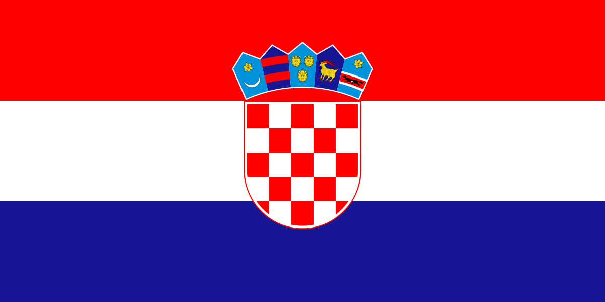

The Spanish Costa Del Sol offers stunning beaches, vibrant nightlife, and beautiful coastal towns like Marbella and Malaga.
Read More
The French Mediterranean coastline along the French Riviera, known as the Côte d'Azur, boasts glamorous resorts like Cannes and Nice.
Read More
The Italian Amalfi Coast is famous for its dramatic cliffs, colorful seaside villages, and delicious Mediterranean cuisine.
Read More

The Croatian Adriatic Coast is dotted with picturesque islands and crystal-clear waters, making it a popular Mediterranean destination.
Read MoreThe Greek Aegan Sea offer a unique blend of ancient history, charming villages, and stunning Mediterranean beaches.
Read More
The Turkish Aegan Sea is known for its turquoise waters, ancient ruins, and coastal towns like Antalya and Bodrum.
Read More